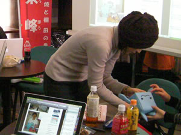
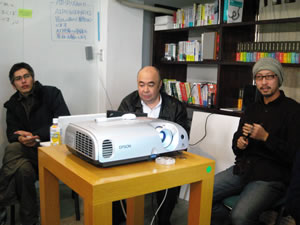

レポート書いてあるBlog
概要
- 日時：2009/2/21(土) 13:30~18:00
- 場所：AIPcafe
- 参加人数：12人？
大まかな流れ
- 13:30〜 東峰村ライブ中継イベント
- 14:00〜 話したい人／ディスカッション内容決め、自己紹介、ライトニングトーク(自慢大会)
- 自己紹介（全員）
- 我流さん：PNG画像について
- ムツキさん：サイト運営して良かった事
- 大久保さん：Wordpressで最近やった事
- 山田さん：伸びしろ
- 武井さん：博多の街モバイルの裏側
- 西嶋さん：JQuery使おうよ
- 18:00〜 懇親会
ざっくりした内容
ライブ中継イベント:東峰メディアカフェオープン記念
福岡県の東峰村に「東峰メディアカフェ」がオープンされ、AIPcafeからもLive放送で流れました。
→詳細はこちら（その時の動画も流れてます）
サト研メンバーも最初の30分ほど、その放送の様子を見学させてもらってました。
イベントの様子にTVメディアも取材に来ていました。
自己紹介
３人新しい人が参加しました。
なので一度全員の自己紹介を行いました。
新しい人の中にはスライドを作ってプレゼンしたり、自分の過去作品を見せてくれたりしました。
ライトニングトーク
山田さん以外、スライドは準備してきてなくて、その場でライブトーク。
今回、司会進行は西嶋さんでした。

我流さん：「PNG画像について」

- 透過PNG(32bit)はさておき、もう全部PNG画像でいいよね？
- GIFとPNGの画像の圧縮方法の違い
- データのサイズの軽いと表示が速い、とは必ずしも言えない（大久保先生）
- imgのwidthとheight属性はもう付けなくていいんじゃないか？
ムツキングさん：サイト運営してて良かった事

大久保さん：Wordpressで最近やった事

- 自身の建築業界での経験からの、現場を知る事でデザインが頭打ちになるのでは？という問いかけ
- Webデザインにおける「表現のデザイン(意匠設計)」と「マークアップ／CSSコーディング(施行)」という全く違う作業を、同じ人間が行うときの苦悩とチャレンジ精神と職人魂
- 詳しくはブランコ山田さんのブログで
武井さん：博多の街モバイルの裏側

- 今年の山笠（５月）までに公開予定の携帯SNSの紹介
- 現在、β版でオープンソース化を検討中
- ライセンス周りが大変だとか
- 管理画面をこっそり公開
- 携帯向け配布コンテンツ(壁紙や待受など)にも使うと便利
- 運営の仕組みにも一工夫
- 配布コンテンツをダウンロードするのに必要なポイントは、コンテンツを投稿する事によって取得できる
- これによっていろんな山笠の写真や動画のコンテンツを参加ユーザにアップしてもらおうというシステム
西嶋さん：jQueryを使おうよ
- jQueryはデザイナーさんももっと使うといいと思うよ
- リファレンス見ながらでも結構書けちゃうよ
- toggle、hide、あとセレクタだけでも覚えたら案外書けるよ
- セレクタ(指定方法)もCSSっぽいからすぐ馴染めるよ
- ライブラリに頼るのいいけど、簡単なのなら自分で作れるよ
- ここで公開してるよ
- 「俺、jQueryerになるよ。」
- おおくぼ「じゃ、俺、Wordpresser(?)になるよ」
- やいぶ「じゃ、MTer(エムター：MovableType使い)で。
ディスカッションは、時間が無くなったので、懇親会のテーマに（汗
「売り上げアップについて」は次回にででも。
今回の反省・今後の事
- プロジェクターを片付けなかった。次回はケースにちゃんと片付ける。
- AIPcafeにプロジェクターを貸してくれてる新井さんに感謝！
- ホワイトボードをちゃんと消す（消したけども後に残る人にちゃんと伝えておくこと）
- 日程調整が我流のせいで二転三転してしまった事。
- 「反省してます、この場を借りてお詫びしますm(__)m 」by 我流
[宣伝]AIPcafeに貢献したい人はぜひAIP会員に！
次回のお題や日時について
恐らく3月中旬の土日あたりで予定。
おまけ
懇親会とか、codecheck.inの二次会で合流してカオスになった様子や、サト研二次会でボーリングの様子とか。
(最近、サト研は懇親会の後、体を動かしにラウンド1に行くのが流行です)
|